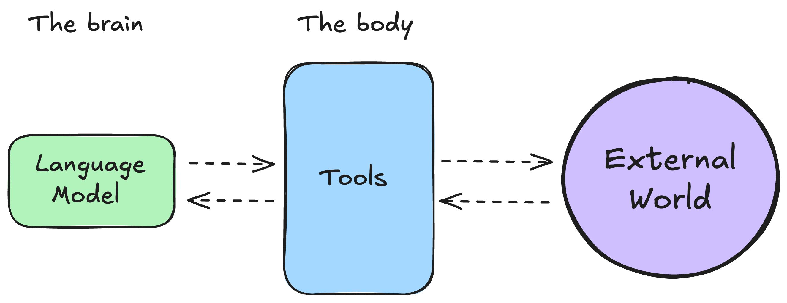

¿Qué es un agente de IA?
Para entender los agentes de IA, empecemos por plantearnos uno. Imagina que te dispones a viajar a Tokio por trabajo. Estás demasiado ocupado para organizarlo, pero por suerte, tu empresa está suscrita a un servicio de agente de viajes con IA que puede ayudarte en la tarea. Llamemos a este agente KITT1.
En el chat conversacional de KITT escribes lo siguiente:
KITT, voy a viajar a Tokio el 26 de junio y me quedaré allí hasta el 12 de julio. Ayúdame a organizar mi viaje.
Razonamiento y planificación
Como KITT entiende el lenguaje natural, capta rápidamente nuestra solicitud. Antes de hacer nada, KITT lleva a cabo un proceso de razonamiento y planificación, a consecuencia del cual llega a un plan de acción, que se compone de los pasos a seguir y las herramientas a utilizar para cumplir la petición correctamente.
En nuestro ejemplo, KITT identifica el siguiente plan de acción:
- Acceder a tu itinerario y calendario
- Identificar dónde deberás alojarte según tu agenda de reuniones
- Identificar vuelos y hoteles relevantes
- Comunicarte el plan
- Finalmente, organizar tu viaje
Pasar a la acción
Tras haber identificado su plan, KITT ahora necesita actuar de acuerdo al mismo.
Para ejecutar el plan, puede usar las herramientas que tiene a su disposición. De manera que accede a:
- Tu calendario y correo electrónico para entender tu agenda y reuniones
- La documentación relacionada con la política de viajes de tu empresa
- Expedia o Booking.com para determinar los mejores vuelos y hoteles
- Finalmente, comparte contigo una propuesta del plan y, una vez acordada, reserva los arreglos de viaje
Razonamiento, planificación y acción
En definitiva, un agente de IA es:
Un modelo de IA capaz de razonar, planificar y actuar mediante un conjunto de acciones, interactuando con su entorno.
Puedes pensar en un agente como un sistema compuesto por dos partes principales:
-
El cerebro: El modelo de IA que se encarga del razonamiento y la planificación. Decide qué acciones tomar según la situación. Se compone de un LLM (Large Language Model o Modelo Grande de Lenguaje) preparado (entrenado) para acometer tareas agentivas.
-
El cuerpo: Representa la acción, todo lo que el agente puede hacer a través de herramientas.

Estos sistemas son agentivos porque tienen la capacidad de obrar, de hacer cosas, lo que significa que pueden interactuar con el mundo real utilizando sus capacidades y las herramientas a las que se les dé acceso.
He aquí otra forma de definirlo:
Un agente es un sistema que aprovecha un modelo de IA para interactuar con su entorno y alcanzar un objetivo definido por el usuario. Combina razonamiento, planificación y ejecución de acciones (a menudo mediante herramientas externas) para cumplir tareas.
Niveles de agencia
Por lo tanto, además de responder a cuestiones, los sistemas de IA pueden llevar a cabo tareas, lo cual los hace agentivos.
En la siguiente tabla se exponen diferenes niveles de agencia en los sistemas de IA:
| Nivel | Agencia | Descripción | Ejempos |
|---|---|---|---|
| 0 | Sin agencia | Sistemas que solo pueden responder a partir del conocimiento intrínseco del modelo, el adquirido durante su fase de aprendizaje o entrenamiento. O bien un software que ejecuta tareas discretas, predefinidas | Chatbots con conocimiento propio (p.e. ChatGPT), sistemas que automatizan un flujo de trabajo |
| 1 | Un enrutado básico | Sistemas que encauzan el flujo por una vía u otra. La agencia del modelo consiste en que decide por qué camino tirar (con ajuste fino del modelo, p.e.) | En atención al cliente, identifica si un ticket debe ir a facturación o a soporte técnico |
| 2 | Con uso de herramientas | Pueden utilizar herramientas externas | Un agente IA de viajes como KITT |
| 3 | Agentes autónomos | Pueden llevar a cabo múltiples pasos de forma autónoma | Sistemas de búsqueda profunda, Deep Research, con razonamiento en múltiples pasos y uso de herramientas |
| 4 | Sistemas multiagente | Sistemas que pueden delegar flujos de trabajo a múltiples agentes | Asistentes de programación que pueden idear, generar, e integrar código |
-
Como el asistente de la serie El coche fantástico. ↩